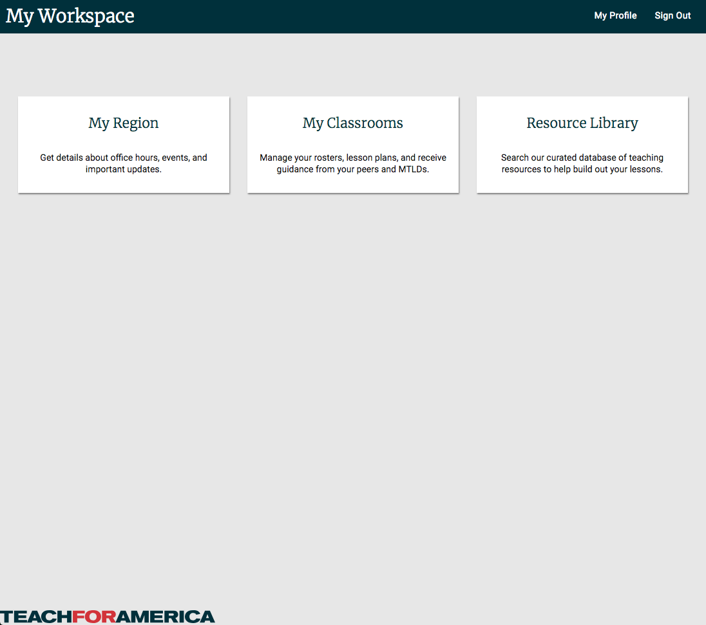
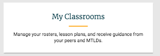

JavaScript/NodeJS Test
For this test, you'll write a node module with a method
that validates whether or not a given string is a palindrome.
(assume ascii text and numbers, but the code should ignore non alphanumeric characters in evaluating sentences,
which may contain punctuation).
It should:
- Expose a method called "isPalindrome" that should:
-
Return true when a String is a palindrome
-
Return false when a String is not a palindrome
-
Return false when a String is empty
-
When passed a parameter that is not a String, throws an Error, or an object that is an instance of one,
with a descriptive message about what went wrong
HTML/CSS Test
For this test, using HTML and CSS3 (assume full standard compliance - don't worry about shims) implement this
page with attention to responsive design:
Mobile
Desktop

-
The headings should be in Merriweather (Light), and all other text should be Roboto. (These are open source approximations
of our on-brand fonts available through Google's Fonts API). Headings that are not white should be #013745.
-
The top banner background color is #00303c.
-
For the top nav, links should have a #f74b59 underline when focused and hovered.
( )
-

For the menu cards, The space between the heading and the description should have a #ffad00 separator when
focused and hovered. The separator should be animated into view (spreading outward to full length from 0px
wide). The hover state should apply whenever any part of the card is hovered over.
-
Links should use Fragment Identifiers to mock out functionality.
-
The page should be navigable by keyboard.
-
This portion of the test should not require any JavaScript.